Anatomical Fiducials (AFIDS)
Geetika Gupta, Kayla Ferko, Greydon Gilmore
Brainhack 2019
Introduction
- Image alignment is crucial step in many neuroimaging studies
- Within/between study participants/patients
- Subject to template registration
- Fiducials represent anatomical feature by 3D Cartesian coordinate (x, y, z)
- This protocol aims to increase accuracy/reliability of image registration
Anatomical Fiducials (AFIDS)
- The 32 fiducials selected are:
- Identifiable across datasets
- Distributed about the brain
- Fiducials placed on any image you want to register
- Euclidean distances between fiducial points of merged objects provide more sensitive registration accuracy metric
K-means clustering point clouds
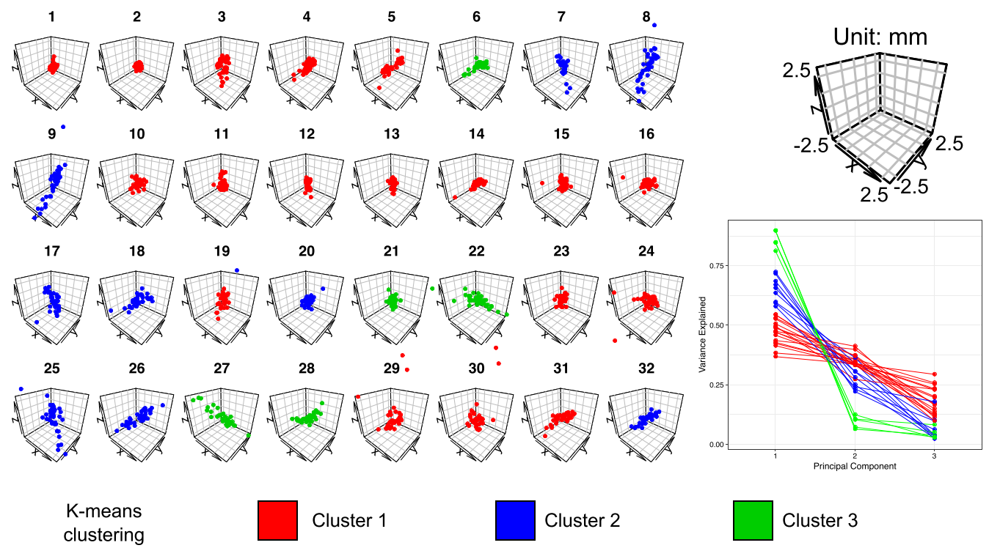
Tutorial session
All resources for this session can be found in this repository
The Mattermost channel can found here
Tutorial session
Today we will walk you through placement of all 32 points on an MRI template.
- Open Slicer and import image data
- Brightness and contrast
- Views: axial (red), sagittal (yellow), coronal (green)
- Crosshairs
- Right mouse button: zoom in/out
- Middle mouse button: pan image
Create markups lists
ACPC_[VolumeID]_[Contrast]_[Rater]_[YYYYMMDD]
Fid32_[VolumeID]_[Contrast]_[Rater]_[YYYYMMDD]
midline
- [VolumeID] = template name
- [Contrast] = T1
- [Rater] = your initials
- [YYYYMMDD] = year month and date
Anterior Commisure
[midline]
- Place at the center of the commissure
- Name: 1
- Description: AC
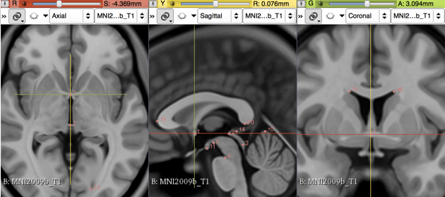
Posterior Commisure
[midline]
- Place at the center of the commissure
- Name: 2
- Description: PC
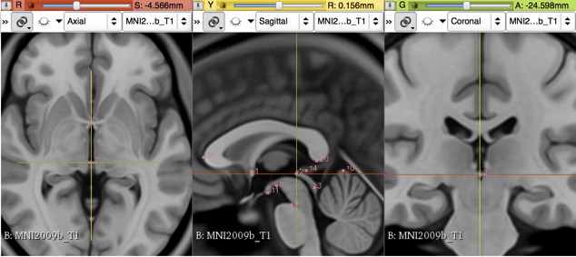
Infracollicular sulcus
[midline]
- Name: 3
- Description: infracollicular sulcus
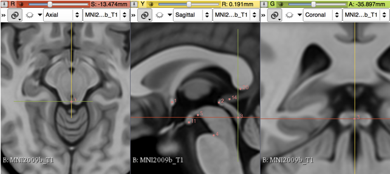
Pontomesencephalic junction [midline]
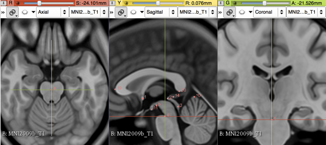
Superior interpeduncular fossa
[midline]
- Name: 5
- Description: superior interpeduncular fossa
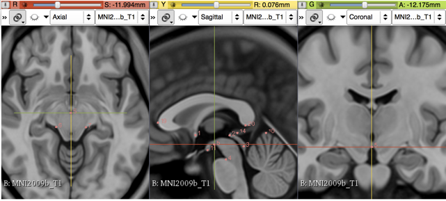
Right superior lateral mesencephalic sulcus
- Name: 6
- Description: R superior LMS
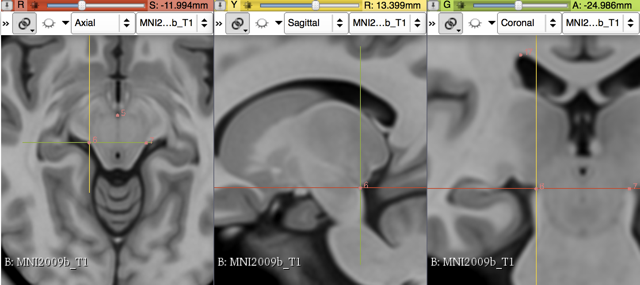
Left superior lateral mesencephalic sulcus
- Name: 7
- Description: L superior LMS
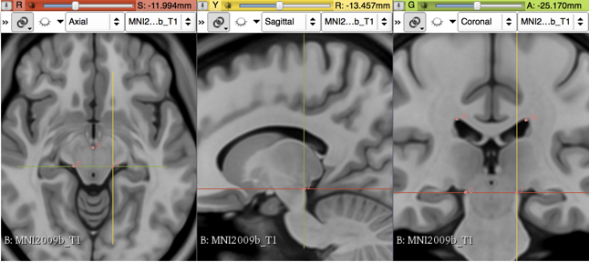
Right inferior lateral mesencephalic sulcus
- Name: 8
- Description: R inferior LMS
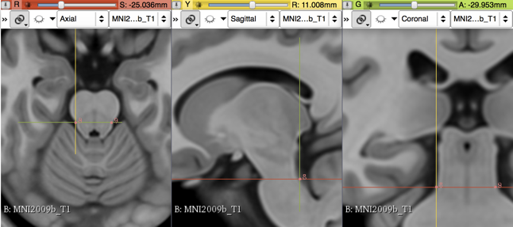
Left inferior lateral mesencephalic sulcus
- Name: 9
- Description: L inferior LMS
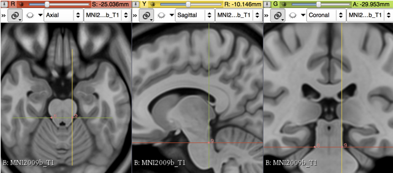
Culmen
[midline]
- Name: 10
- Description: culmen
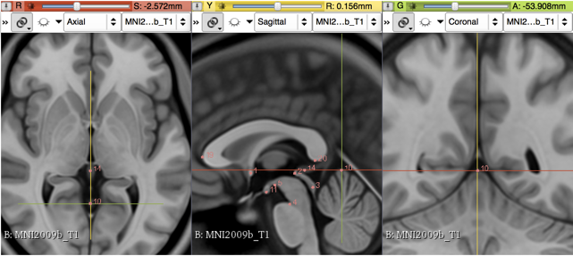
Intermammillary sulcus
[midline]
- Name: 11
- Description: intermammillary sulcus
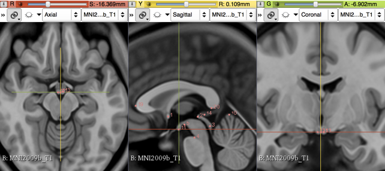
Right mammillary body
- Name: 12
- Description: R MB
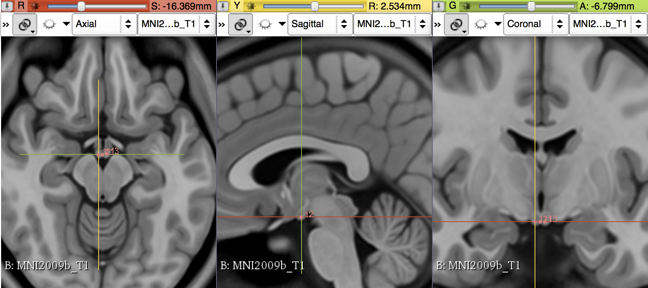
Left mamillary body
- Name: 13
- Description: L MB
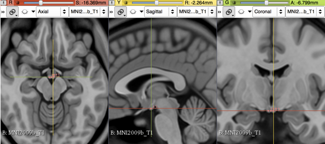
Pineal gland
[midline]
- Name: 14
- Description: pineal gland
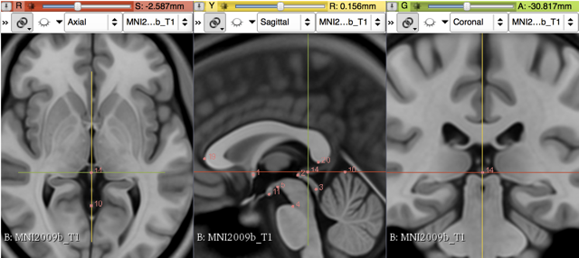
Right lateral aspect of frontal horn at AC
- Name: 15
- Description: R LV at AC
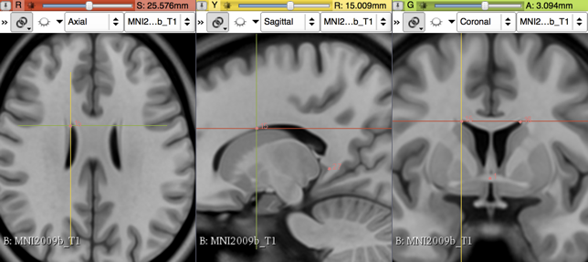
Left lateral aspect of frontal horn at AC
- Name: 16
- Description: L LV at AC
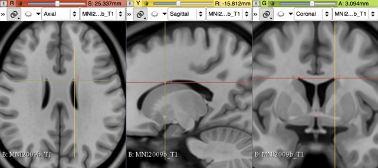
Right lateral aspect of frontal horn on at PC
- Name: 17
- Description: R LV at PC
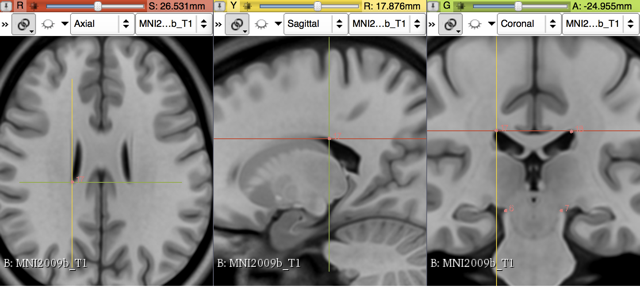
Left lateral aspect of frontal horn at PC
- Name: 18
- Description: L LV at PC
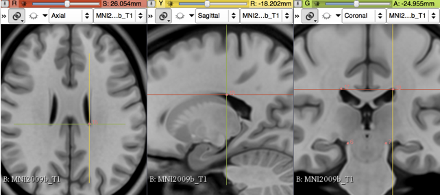
Genu of corpus callosum
[midline]
- Name: 19
- Description: genu of CC
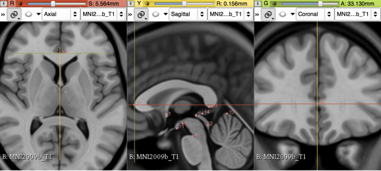
Splenium of the corpus callosum
[midline]
- Name: 20
- Description: splenium of CC
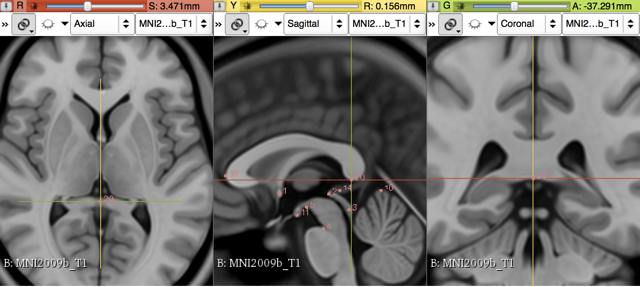
Right anterolateral temporal horn
- Name: 21
- Description: R AL temporal horn
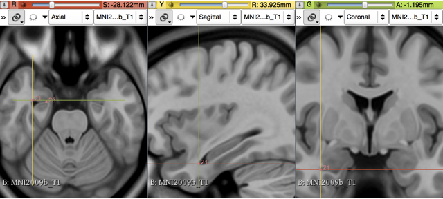
Left anterolateral temporal horn
- Name: 22
- Description: L AL temporal horn
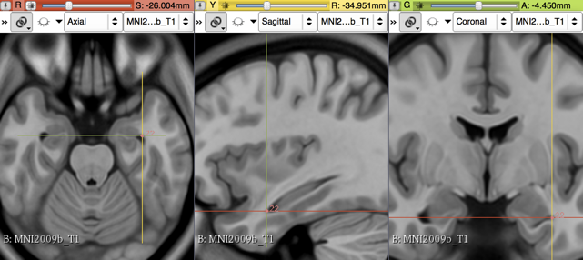
Right superior AM temporal horn
Rhoton's right uncal recess
- Name: 23
- Description: R superior AM temporal horn
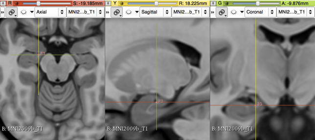
Left superior AM temporal horn
Rhoton's left uncal recess
- Name: 24
- Description: L superior AM temporal horn
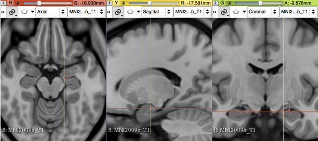
Right inferior AM temporal horn
- Name: 25
- Description: R inferior AM temporal horn
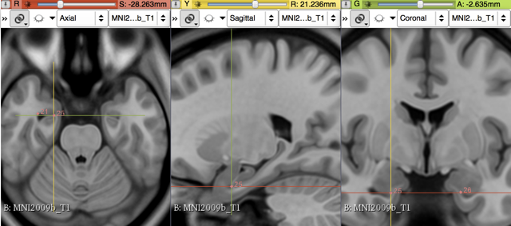
L inferior AM temporal horn
- Name: 26
- Description: L inferior AM temporal horn
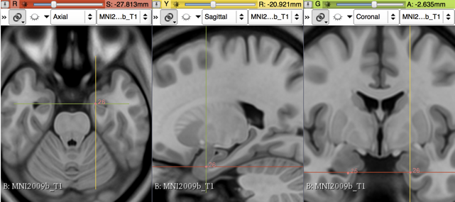
Right indusium griseum origin
- Name: 27
- Description: R indusium griseum origin
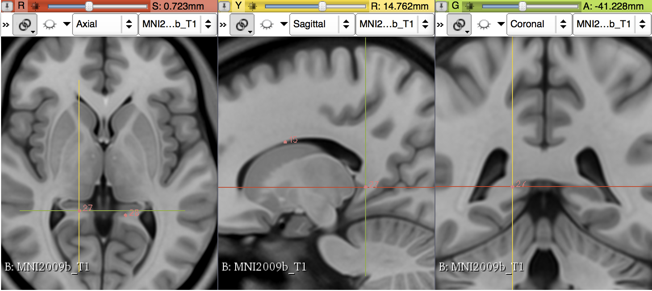
Left indusium griseum origin
- Name: 28
- Description: L indusium griseum origin
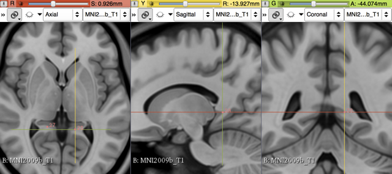
Right ventral occipital horn
- Name: 29
- Description: R ventral occipital horn
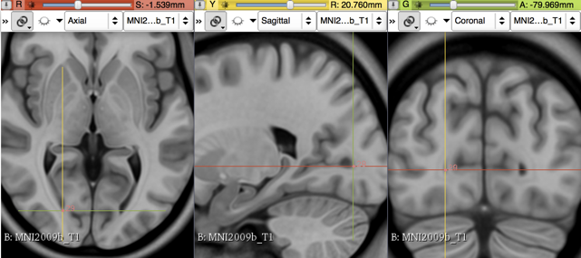
Left ventral occipital horn
- Name: 30
- Description: L ventral occipital horn
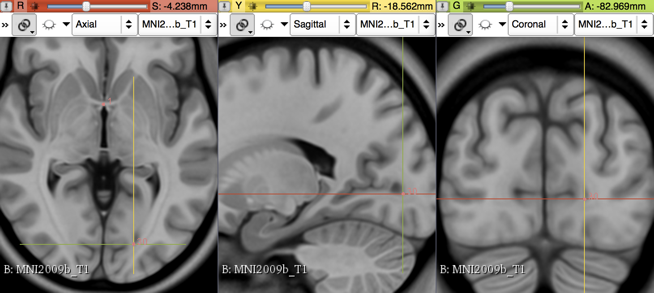
Right olfactory sulcal fundus
- Name: 31
- Description: R olfactory sulcal fundus
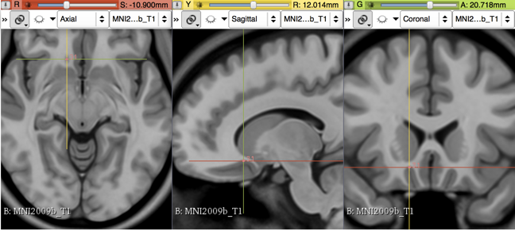
Left olfactory sulcal fundus
- Name: 32
- Description: L olfactory sulcal fundus
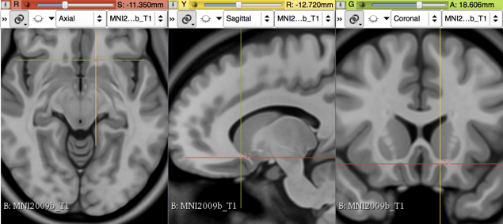